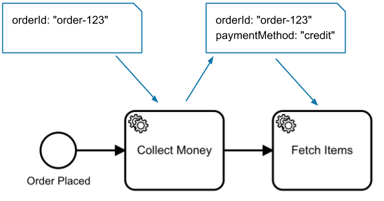
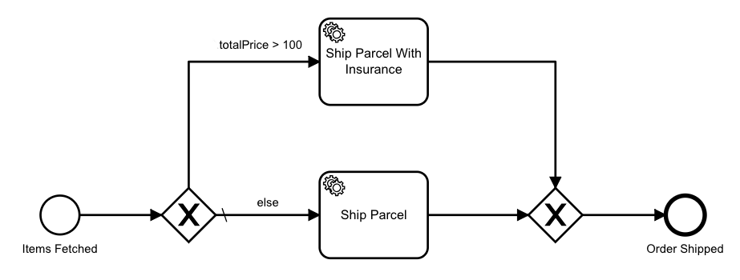

Processes
Processes are flowchart-like blueprints that define the orchestration of tasks.
For example, with Camunda you can orchestrate human tasks.
Every task represents a piece of business logic so the ordered execution produces a meaningful result.
A job worker implements the business logic required to complete a task. A job worker must be able to communicate with Camunda 8, but otherwise, there are no restrictions on its implementation. You can choose to write a worker as a microservice, but also as part of a classical 3-tier application, as a (lambda) function, via command line tools, etc.
Running a process requires three steps:
- Deploy a process to Camunda 8.
- Implement and register job workers for tasks in the workflows.
- Create new instances of said process.
However, if you haven't yet, design the process:
BPMN 2.0
Zeebe uses BPMN 2.0 to represent processes. BPMN is an industry standard widely supported by different vendors and implementations. Using BPMN ensures processes can be interchanged between Zeebe and other process systems.
BPMN modeler
Zeebe provides a free and open source BPMN modeling tool to create BPMN diagrams and configure their technical properties. The modeler is a desktop application based on the bpmn.io open source project.
Desktop Modeler can be downloaded from GitHub.
New to modeling a process using BPMN? Visit our step-by-step introductory guide to automating a process using BPMN.
Sequences
The simplest kind of process is an ordered sequence of tasks. Whenever process execution reaches a task, Zeebe (the workflow engine inside Camunda 8) creates a job that can be requested and completed by a job worker.
![process-sequence]()
You can think of Zeebe's process orchestration as a state machine, taking the following steps:
- A process instance reaches a task, and Zeebe creates a job that can be requested by a worker.
- Zeebe waits for the worker to request a job and complete the work.
- Once the work is complete, the flow continues to the next step.
- If the worker fails to complete the work, the process remains at the current step, and the job could be retried until it's successfully completed.
Data flow
As Zeebe progresses from one task to the next in a process, it can move custom data in the form of variables. Variables are key-value pairs and part of the process instance.

Any job worker can read the variables and modify them when completing a job so data can be shared between different tasks in a process.
Data-based conditions
Some processes don't always execute the same tasks, and instead need to choose different tasks based on variables and conditions:

The diamond shape with the X in the middle is an element indicating the process can take one of several paths.
Events
Events represent things that happen. A process can react to events (catching event) and can emit events (throwing event).
![process]()
There are different types of events, such as a message, timer, or error.
Parallel execution
In many cases, it's also useful to perform multiple tasks in parallel. This can be achieved with a parallel gateway:
![data-conditions]()
The diamond shape with the + marker means all outgoing paths are activated. The tasks on those paths can run in parallel. The order is only fulfilled after both tasks have completed.